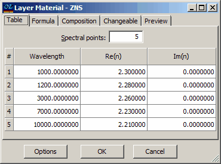

Exercise 2. Dispersive and absorbing materials
Exercise 2. Dispersive and absorbing materials
All necessary files for this exercise are located in the directory EX2. Select this directory using the Problem menu command. In SF Mode you need to use Import Problem Directory command (File Menu).
First, load the Substrate GLASS into memory.
Zinc sulfide and thorium fluoride are the high and low index layer materials used in this example. Both materials are considered to be dispersive. Enter the Layer Material database and examine the ZNS file, dispersive properties of this material are specified in a tabular form:

Similarly, THF4 file defines the low index material that has dispersion and absorption. Use Edit command of the Layer Material database to examine this file. Note that Preview tab allows to observe data in graphical form.
Load both materials. They will get abbreviations H and L, as it was discussed in the previous Exercise.
Switch to the Design database and try to load QWM design. You will get “Material A is not loaded!” error message. Open QWM file with the help of the Edit command and note that this file uses material abbreviation A for all even layers. Corresponding fields for physical thicknesses are disabled and have zero values. This means that the corresponding layer material is not loaded to memory and OptiLayer is not able to calculate the layer physical thicknesses basing on optical thicknesses. Indeed, we have only H and L materials in memory.
Go to the Arrange Materials command of Data menu. This dialog also can be accessed through Analysis->Options command. Change the abbreviation of THF4 material from L to A. Open again the Design Editor if it was closed and notice that now all physical thicknesses are available. Load the QWM design to the memory (it is a 12 layer quarter-wave mirror with the control wavelength 2000nm).
Open the Evaluation window and select plotting range (X-axis) from 500nm to 3000nm. Set also R (reflectance) as plotted characteristic. Two high-reflection zones will be displayed in the Evaluation window. Activate HiRes option to use more spectral points for plotting, it makes plots more accurate at the expense of increasing plotting time.
Use the General Configuration dialog to change wavelength and T, R units. Changes are reflected immediately in all opened windows. Corresponding units are also shown in the Units section of the General Information Window.